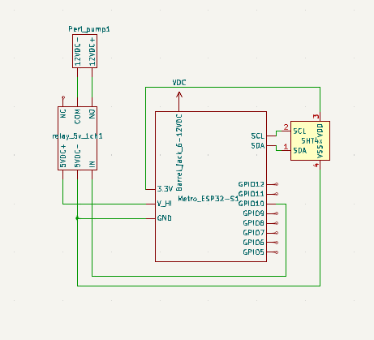

Sprint I
Sprint Overview
The goal of sprint 1 was to create a singular plant pot that uses an ESP32 microcontroller to automatically pump water and collect sensor data.
Mechanical
Description of mechanical components
Electrical
Description of the circuit
Software
For sprint 1, the software goal was to have a simple microcontroller code that turns the water pump on/off for a specified duration. This was achieved using the millis() function from the Arduino library. The user was able to change the duration by typing in the new duration in the Serial monitor. Also, the temperature & humidity readings from the sensor are displayed through the Serial monitor.